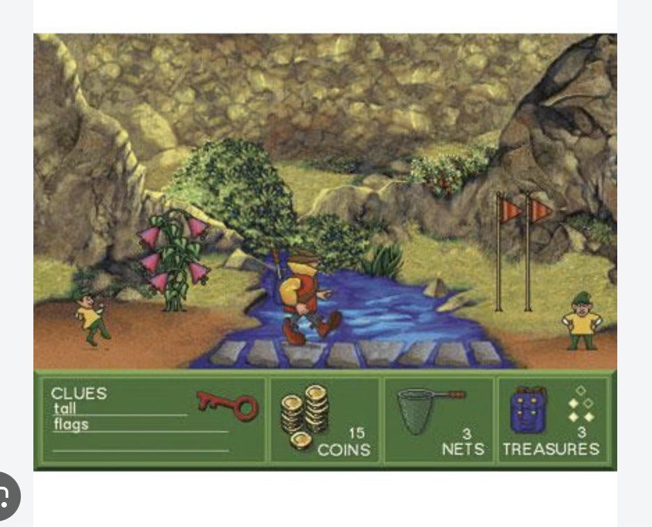
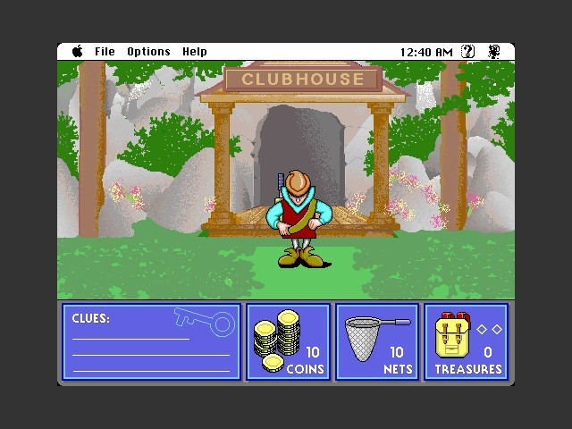
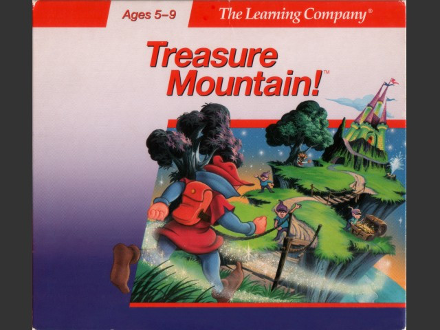
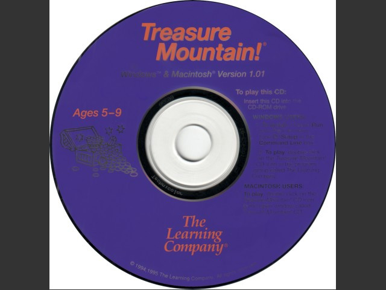
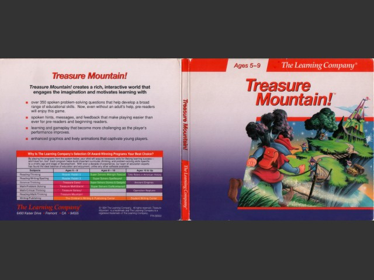

Treasure Mountain!





Details
My notes
I played this educational game in the school computer lab. I remember climbing ladders and exploring caves.
Identification
Treasure Mountain!, part of The Learning Company’s Super Solvers series. I recognised the screenshot above. The precise edition used at school is still unverified; the extra v1.01 pictures are reference material, rather than a claim that this was my copy.
What you do
Explore a mountain, collect hidden treasures, and carry them to the chest at the top. Catch scroll-carrying elves with a net and answer their questions to earn word clues and coins. Find scenery matching the clues, then spend a coin to search it: two matching clues reveal treasure, while all three reveal the key to the next mountain level.
Nets wear out as you catch elves, and a net cave lets you pay for repairs. Some mischievous elves throw dust that takes away coins. The climbing and cave exploration are part of this treasure hunt.
Things to recognise
- The explorer’s hat and backpack.
- The bottom panel for clues, coins, nets, and treasures.
- Elves carrying scrolls and the net used to catch them.
- Flowers, rocks, plants, and flags that can match word clues.
- The clubhouse and the treasure chest at the mountaintop.
Learning activities
The questions combine maths, word puzzles, word patterns, and science. Following the clues also practises reading and reasoning. The original game allows time to think without a countdown.
Release and edition notes
The original DOS game dates to 1990. Later Windows and Macintosh releases changed the artwork. Macintosh Repository identifies the reference disc shown here as the 1995 v1.01 release and distinguishes it from both the DOS version and later v2.x editions.
References and picture sources
- The first picture is the screenshot I supplied and recognised.
- Macintosh Repository — v1.01 gameplay, case, CD, and edition information
- COMPUTE!, July 1991 — contemporary review and explanation of the game
- Release information for the DOS and Windows versions
- More Treasure Mountain screenshots